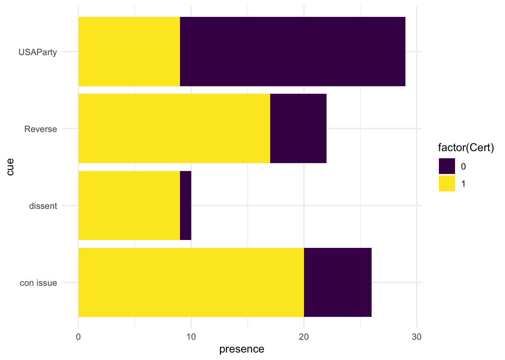

Rows: 121 Columns: 10
── Column specification ────────────────────────────────────────────────────────
Delimiter: ","
chr (1): CASE
dbl (9): Cert, Reverse, dissent, con issue, USAParty, Cues, Court, direction...
ℹ Use `spec()` to retrieve the full column specification for this data.
ℹ Specify the column types or set `show_col_types = FALSE` to quiet this message.
cert_df <- cert_df |>slice(1:112)
Introduction
For this blog post I will be working with a data set that I collected for a my Government Major Seminar. This data is a random sample of 112 cases from the Supreme Court’s October Term 2020. The variables I am most interested in are Cert (whether the case was granted Certiorari), Cues (the number of cues that justices look at when deciding to grant cert), and Court (Average JCS score which is a measure of judicial ideology of the Justices who read the case). I am most interested at looking at the difference in rates of Cert votes for different Court Ideologies and numbers of cues. This is interesting because even though there is only one term represented, there are two values for the Court’s average JCS score as Justice Barrett joined the court in the middle of the term and her addition made the court slightly less conservative.
Is there a perceivable difference in rates of Cert grants between cases that Justice Barrett decided on and how does the number of cues present in a case affect this difference?
This data was hand collected and coded by myself in November of 2022. Using guidance from well researched coding methods for Supreme Court data, I personally read all 112 cases and hand coded the variables accordingly.
Description of relevant variables:
Cert - Whether the case was granted Certiorari (read and decided on by Supreme Court), coded as 1 = Yes, 0 = No
Cues - Count of the number of cues present in a case, cues are defined as things Justices look for in a case that typically increase the chances of a cert vote. I selected the 4 most important cues which was decided through previous research (Reversal in the lower courts, Dissent in the lower court, Whether the case contains a Constitutional Issue, and whether US is a party in the case)
Court - Average JCS Score of the Court. JCS Scores are a well researched method of coding Judicial Ideology. -1 entirely liberal, 0 entirely neutral, 1 entirely conservative.
This side by side bar plot demonstrates the difference in the number of cases granted and denied cert based on whether Justice Barrett was deciding on the case. The bars under 0.11 represent the cases where Justice Barrett did not decide and the bars under 0.099 represent the cases where Justice Barrett did decide. As demonstrated by the plot, the sample sizes are not the same for these groups which shows that Barrett decided on more cases than not this Term. While this is true, the relationship between cert grants and denies is still demonstrated by the plot. It appears from this plot that the court was far more likely to grant cert when Barrett was deciding despite the larger sample size.
This side by side bar plot demonstrates the same things as the previous one however it instead groups the data by the number of cues rather than whether Justice Barrett decided on the case. The results shown in this plot are not surprising in the least and do a good job illustrating the relationship between Cert grants and the number of cues present in a case. Unsurprisingly, as the number of cues in a case increase, they are more likely to be granted Cert. Cases with one cue are an interesting subset to look at because this is the tipping point where cases begin to be more likely to be granted Cert. However, interestingly they are only slightly more likely to be granted Cert with only one cue.
This presents an interesting question of whether certain cues are more important than others.
ggplot(data = cert_longer, aes(x = cue, y = presence, fill =factor(Cert))) +geom_col() +coord_flip() +scale_fill_viridis_d() +theme_minimal()

This plot provides an answer to this secondary question, as it appears that the case containing a Constitutional Issue and the case being reversed in the lower court to be the most important cues given they have high proportions of grants vs denies. Interestingly Dissent appears to be extremely important as it has a very good grant to deny ratio, however it is hard to speak on this definitively given the sample size of cases with lower court dissents is so low.
Conclusion
There were a few limitations that I encountered with this data. Primarily, this data was collected from only one Supreme Court term and therefore represents only a small sample of Terms and Courts. This makes it difficult to generalize any findings to the Court at large and only allows me to draw conclusions on this specific Term. However, because this data is so reliant on the JCS score of this specific Court, much of the findings can probably be generalized until the Court loses or gains any new members. With more time, I would like to extend this dataset to incorporate more cases and Courts, so there will be a larger sample size and therefore more concrete conclusions can be drawn.
Connections to Class Ideas
My visualizations connect to class in a few ways. First I decided to use stacked and side-by-side bar plots because I was looking primarily at connections between categorical variables. Because these are easier to read, generally speaking, than a heatmap and I did not have too many categories these seemed like the best option. Along with this, I was able to use distinct colour scales because none of my variables were continuous. I utilized coord flips in order to place quantitative variables on the x-axis which also imporves the readability of my plots.